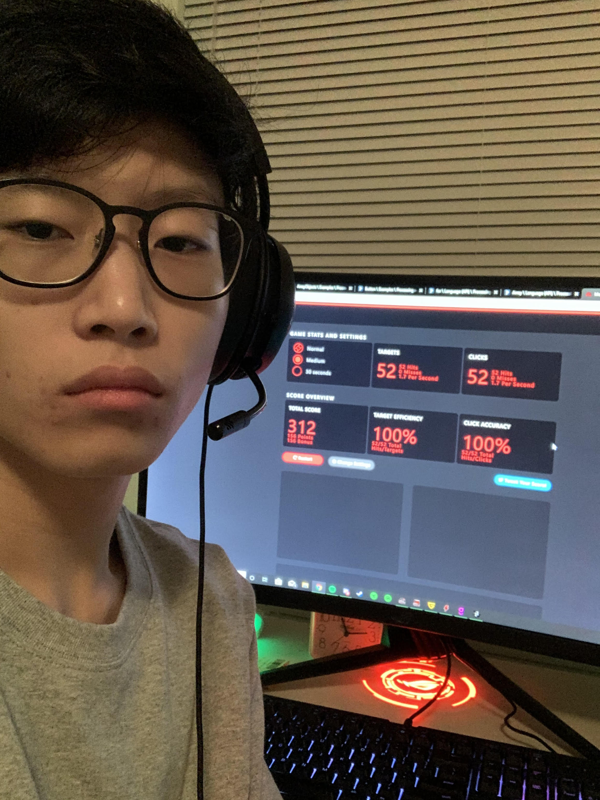

Who am I?
My name is Justin Yoon.
In Computer Programming, I'm also known as DizzyTube.
DizzyTube is my YouTube channel username.
Mr.Dawson makes fun of me for going to Las Vegas a lot. It's because I missed his classes for that haha.
My hobby is playing video games, and wasting time watching YouTube.
I often stay up late doing homework because after school, I watch YouTube and that just destroys my precious time to work on homework.
I was born in Surrey, BC. I am Korean.
I moved back to Canada in 2016 and I learned English very quickly compared to other immigrants or international students.
The photo on the left is just a selfie of me but at the same time flexing on the score I got on the mouse accuracy game.
We (Level 2 boys) had a competition going on.
Fun fact: I have Mr.Dawson's class 3 semesters in a row. It is exciting to learn Photoshop next semester and it was great to learn computer programming.
My goal this year is to get 90% or above average. Since I'm in grade 11, I need a good average to go to good universities. I am thinking of taking a Computer Science degree.
Actually, my real goal is to bring back DizzyTube. My channel was inactive for over 2 years so one day I will try to bring it back so I can earn money off of YouTube.